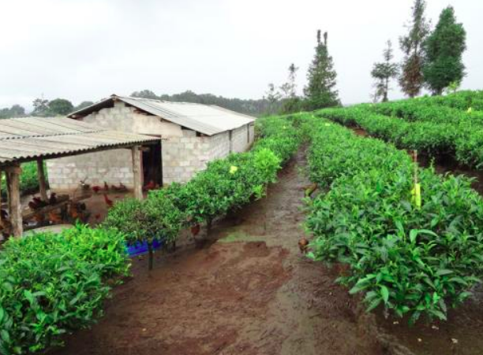

现代科学养猪新技术—原生态养猪
概述：养猪场粪便污染一直是我国养猪业的一大难题，养猪场粪便不仅对养猪场内猪群有较大的疾病传染威胁，
还对周围环境造成严重的污染。
之前，我国为此付出较大的努力来研发出好多解决猪场粪便污染问题，
但是效果并不太理想。目前，经过我国养殖专家不懈努力的研究，
终于找到了解决猪场粪便污染的技术，那就是原生态养猪技术。
我国一直倡导科学养猪，但是并没有一套完整的养猪技术，无法彻底解决养猪场粪便污染问题，
如今这个难题已经被解决了，原生态养猪技术能够无污染的解决养猪场的粪便处理问题，
下面我们一起来探讨一下原生态养猪技术的要点分析。
一、猪舍建造
为彻底解决养猪场粪便污染问题，我国养殖专家教授和技术人员经过几年的潜心研究，已开发出原生态养猪新技术，该技术在近年的示范推广中取得了良好经济和社会效益。现将原生态猪舍建造和猪舍改造的经验介绍如下:
1.猪舍建造的基本原则：规范的原生态猪舍一般要求通风采光良好，呈东西走向，坐北朝南，南北可以敞开,采光充分，通风良好。冬季寒冷地带猪舍北面墙体厚度为24厘米(另外加保温层)或37厘米(中间加珍珠岩)。一般床面距屋梁高度3.5米为宜，屋梁距屋脊高度1.5米。
2.发酵床结构：发酵床为深80厘米~100厘米的池子。它的面积为栏舍面积的70%左右，余下面积应作硬化处理，成为硬地平台，供生猪取食或盛夏高温的休息场所
3.料槽结构：料槽内部结构似梯形，上口宽35厘米~40厘米，下口宽20厘米，高10厘米，上口的外沿略高于内沿，下口要圆滑，不要有死角。
4.饮水和排水：管道要用无毒的材料，乳头饮水器要在整个管道的**处，每20头猪安一个自动饮水器，距地面距离为10厘米左右。饮水台呈斜坡状，饮水处低，靠近床面处高，并在低处有管道向舍外排水。
5.圈舍护栏：护栏分内护栏和外护栏，内护栏指在发酵床上的护栏，其高100厘米，在水平线上80厘米、在水平线下20厘米;外护栏高70厘米，**处距水平线10厘米，**处距水平线80厘米。外护栏要以挂钩连接，这样可以省去猪圈小门。

二、垫料的制作
原生态养猪新技术是我国养殖专家、教授和技术人员经过多年的潜心研究，总结出来的养猪新技术。在近3年的示范推广中取得了良好的经济和社会效益。为了使该技术成果能够大面积的推广应用，现简要介绍一下原生态养猪中的垫料制作方法：
1、垫料的选择
垫料要求具有保水性、透气性和有一定的微生物营养源。垫料选择应因地制宜，适时择用，南方以稻壳、稻糠、竹锯末、珍珠岩为主，稻草、树叶杂草粉碎后也是很好的垫料;北方以玉米秸秆、花生壳粉、玉米芯粉、草粉、珍珠岩为主。
2、垫料厚度要求
一般猪舍中垫料的总厚度约为80厘米～100厘米，冬季垫料厚，夏季垫料相对薄一些。垫料厚度不低于45厘米，单个发酵床垫料体积不少于10立方米。
3、垫料发酵操作方法
对HM垫料发酵基进行预处理：①在冬季发酵垫料时，先将HM垫料发酵基在30℃～40℃的温水中浸泡8小时～10小时，目的是激活HM垫料发酵基。②其他季节发酵垫料时，将HM垫料发酵基与细碎的玉米面、菜粕和麦麸混合物拌均，目的是给微生物提供多种营养的同时加大HM垫料发酵基与发酵原料的接触面积。
4、混料发酵
①集中统一制作法：即在舍外按各猪舍的体积计算好各种垫料的用量，将各垫料按比例混均，在冬季发酵时，将**种预处理过HM垫料发酵基分次加入水中，边搅拌垫料边加水，调水分至50%～60%;其他季节发酵时，将第二种预处理过的HM垫料发酵基分次撒入垫料中，混合搅拌均匀，调水分至50%～60%(即手握手心发湿，但指缝不滴水)，然后堆成高1米左右、宽1.5米～2米，长度不限的长方体，堆好后上半部用编织袋或长秸秆类物料覆盖，以减少水分的蒸发，然后将温度计插入物料30厘米处。混合堆积发酵，温度达55℃以上保持5天，然后翻堆，翻堆后温度达55度以上时再发酵5天，然后将堆高降低，待温度平稳下降至环境温度，即可将垫料填入猪舍。经过上述发酵,不仅对垫料进行了无害化处理，并保证功能微生物菌种能够大量繁殖和定殖。
②舍内直接制作法：将选好的垫料、HM垫料发酵基按比例在猪舍发酵池内充分搅拌均匀,再加水搅拌，调水分至50%～60%，然后进行堆积发酵。发酵方法同舍外方法，注意发酵池内要预留一定空间，便于垫料搅拌、翻堆等到操作。
5、铺设垫料
垫料经过无害化处理，温度下降平稳后，摊开垫料时有清爽的酸香味，没有异臭味，说明垫料已发酵成功，即可将垫料摊开(运送)到每一个栏舍，按要求铺设高度。